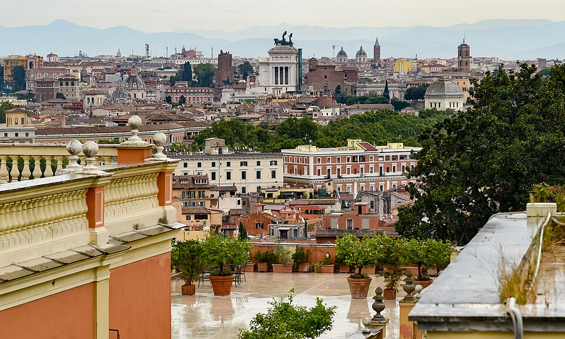

San Lorenzo
The lively district immediately south of the university, with informal restaurants, pizzerias, cafés, street art, and a strong student atmosphere. It is the easiest option for dinner after the conference.
Open in Google MapsA strong advice on what to visit
Welcome to Rome. The Eternal City is too large to be reduced to a checklist. This page offers a few suggestions from the local organizers, combining the essential monuments with quieter places, evening walks, and areas that are easy to reach from Sapienza.

The lively district immediately south of the university, with informal restaurants, pizzerias, cafés, street art, and a strong student atmosphere. It is the easiest option for dinner after the conference.
Open in Google MapsA pleasant historic park on Via Nomentana, suitable for a quiet walk. The park also contains the Casino Nobile, the Casina delle Civette, and other unusual buildings.
Official informationA small early-twentieth-century architectural complex around Piazza Mincio, mixing Liberty, Art Deco, Gothic, Baroque, and medieval elements. It can be combined with Villa Torlonia.
Official tourism pageOne of Rome's four major papal basilicas, within walking distance of Termini and not far from Sapienza. It is especially impressive in the early evening.
Official tourism pageCross the river near the Jewish Ghetto, walk through the Tiber Island, and continue into the smaller streets of Trastevere. The main squares can be crowded, but the side streets are rewarding.
Suggested walking routeStart in Monti, walk down Via dei Serpenti, and continue toward the Colosseum and the Imperial Fora. The archaeological area is particularly atmospheric after sunset.
Open in Google MapsThe Gianicolo offers a broad panorama over central Rome. A good route starts in Trastevere and climbs toward the Fontana dell'Acqua Paola and the panoramic terrace.
Open in Google MapsFrom Piazza del Popolo, climb to the Pincio terrace and continue through Villa Borghese. This is one of the most pleasant sunset walks in the city.
Open in Google MapsRoman cooking is based on a relatively small number of strong traditional dishes. Typical choices include carbonara , gricia , amatriciana , cacio e pepe , saltimbocca , artichokes, and supplì . In San Lorenzo, Testaccio, Trastevere, and Monti, it is usually better to choose a simple trattoria or pizzeria away from the most crowded squares.
For current exhibitions, concerts, accessibility information, official attraction pages, and practical city updates, consult the official Turismo Roma website .
Opening times, ticketing systems, and access rules may change. Always verify details on the official website of the monument or museum before visiting.